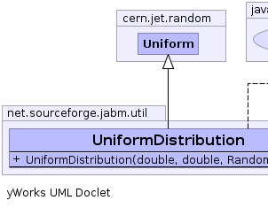
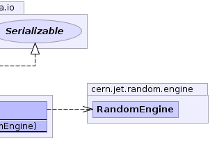

cern.colt.PersistentObject
cern.jet.random.AbstractDistribution
cern.jet.random.AbstractContinousDistribution
cern.jet.random.Uniform
net.sourceforge.jabm.util.UniformDistribution
cern.colt.PersistentObject
cern.jet.random.AbstractDistribution
cern.jet.random.AbstractContinousDistribution
cern.jet.random.Uniform
net.sourceforge.jabm.util.UniformDistribution
|
|||||||||
| PREV CLASS NEXT CLASS | FRAMES NO FRAMES | ||||||||
| SUMMARY: NESTED | FIELD | CONSTR | METHOD | DETAIL: FIELD | CONSTR | METHOD | ||||||||
java.lang.Object
public class UniformDistribution
|  |  |
| Field Summary |
|---|
| Fields inherited from class cern.jet.random.Uniform |
|---|
max, min, shared |
| Fields inherited from class cern.jet.random.AbstractDistribution |
|---|
randomGenerator |
| Fields inherited from class cern.colt.PersistentObject |
|---|
serialVersionUID |
| Constructor Summary | |
|---|---|
UniformDistribution(double min,
double max,
cern.jet.random.engine.RandomEngine prng)
|
|
| Method Summary |
|---|
| Methods inherited from class cern.jet.random.Uniform |
|---|
cdf, nextBoolean, nextDouble, nextDoubleFromTo, nextFloatFromTo, nextInt, nextIntFromTo, nextLongFromTo, pdf, setState, staticNextBoolean, staticNextDouble, staticNextDoubleFromTo, staticNextFloatFromTo, staticNextIntFromTo, staticNextLongFromTo, staticSetRandomEngine, toString |
| Methods inherited from class cern.jet.random.AbstractDistribution |
|---|
apply, apply, clone, getRandomGenerator, makeDefaultGenerator, setRandomGenerator |
| Methods inherited from class java.lang.Object |
|---|
equals, finalize, getClass, hashCode, notify, notifyAll, wait, wait, wait |
| Constructor Detail |
|---|
public UniformDistribution(double min,
double max,
cern.jet.random.engine.RandomEngine prng)
|
|||||||||
| PREV CLASS NEXT CLASS | FRAMES NO FRAMES | ||||||||
| SUMMARY: NESTED | FIELD | CONSTR | METHOD | DETAIL: FIELD | CONSTR | METHOD | ||||||||